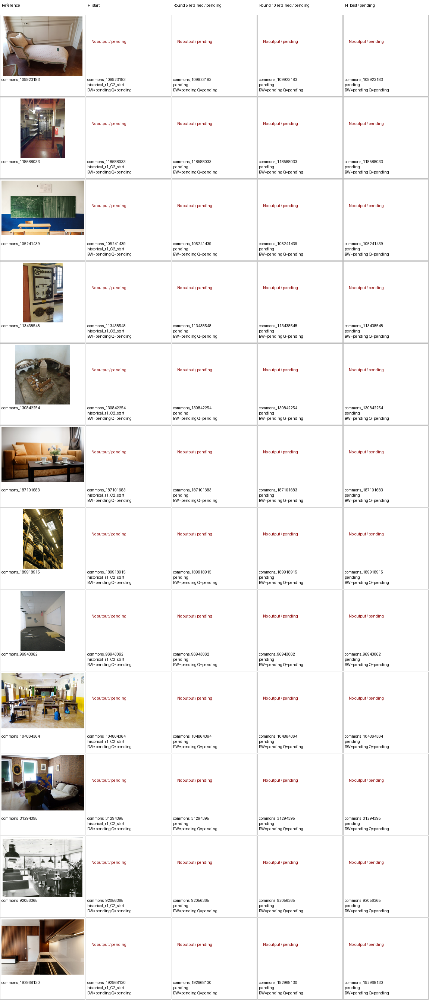
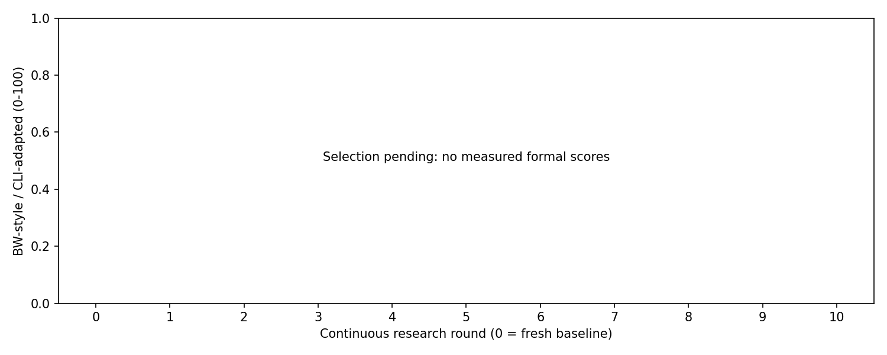
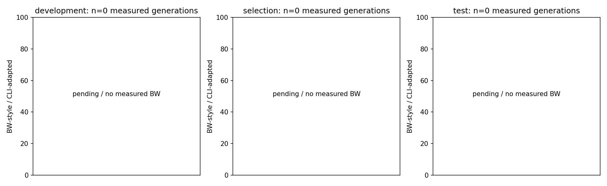
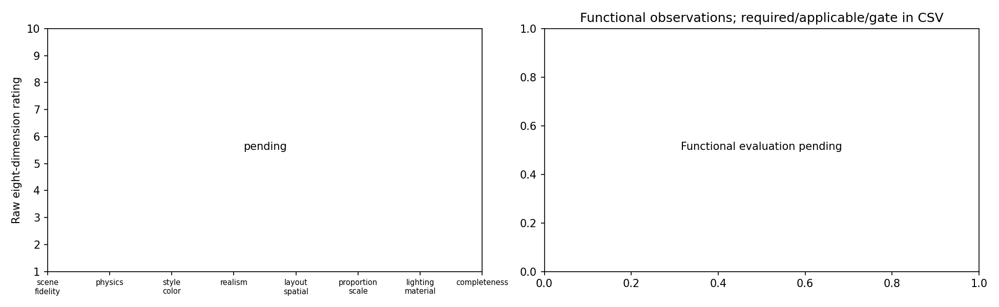
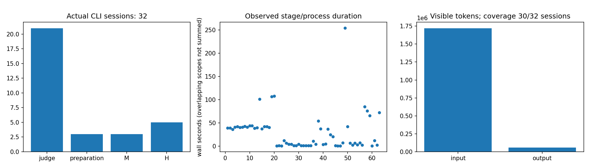
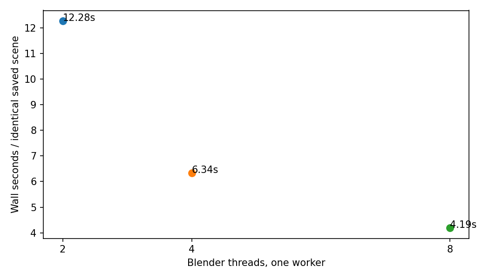
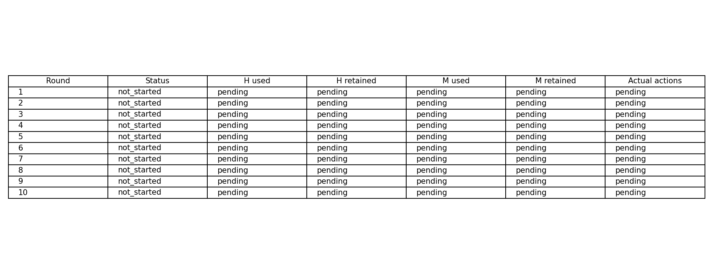

本轮状态：generation；正式研发完成 0/10 轮。保存了 0 条正式场景记录、0 次BW测量；终测 pending（已完成记录 0）。实际CLI会话 32 次（包括准备阶段），usage可见 30/32。
终测每来源每端点计划 1 次生成；依据 config.json:pilot.final_test.primary_repeats，当前为最低保证次数，尚未作最终预算分支决定。 H_best与H_start相同时复用同一版本的真实产物，不增加独立生成数。
所有结果均为 BW-style / CLI-adapted，不是官方榜单分数。开发历史图已暴露；同模型研发与评审存在偏差。未完成项保留pending/null；没有真实冻结元回放时不宣称元能力改善。进程树RSS为0.1秒采样下界；嵌套阶段墙钟和CPU作用域有重叠，不相加冒充总耗时。
中文Markdown · 原始汇总JSON · 离线重画脚本 · 来源与暴露记录
| round | status | H_parent | M_parent | candidate_type | H_retained | M_retained | H_accepted | M_accepted |
|---|---|---|---|---|---|---|---|---|
| 1 | not_started | null | null | null | null | null | null | null |
| 2 | not_started | null | null | null | null | null | null | null |
| 3 | not_started | null | null | null | null | null | null | null |
| 4 | not_started | null | null | null | null | null | null | null |
| 5 | not_started | null | null | null | null | null | null | null |
| 6 | not_started | null | null | null | null | null | null | null |
| 7 | not_started | null | null | null | null | null | null | null |
| 8 | not_started | null | null | null | null | null | null | null |
| 9 | not_started | null | null | null | null | null | null | null |
| 10 | not_started | null | null | null | null | null | null | null |







没有实际记录的诊断链、元回放和结构收益保持未验证；报告不会以概念图或其他场景代替缺失结果。